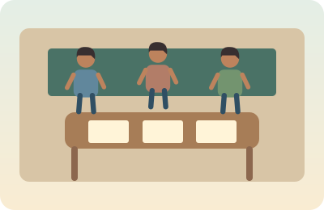

STAGE 04 · Advanced
उन्नत
Register, complex sentences, reasoning and formal communication.
Entry: Describe experiences and plans, understand a short passage and give reasons.
Start lessons →

25औपचारिक और अनौपचारिक शैली
Register & politeness2 lessons · 1 worksheet
Open → 26
26जटिल वाक्य और संबंध
Complex sentences2 lessons · 1 worksheet
Open → 27
27शर्त और संभावना
Conditions & uncertainty2 lessons · 1 worksheet
Open → 28
28क्रिया के सूक्ष्म अर्थ
Compound verbs & aspect2 lessons · 1 worksheet
Open → 29
29समाचार और तथ्य
News & evidence2 lessons · 1 worksheet
Open →30विचार-विमर्श और असहमति
Discussion & disagreement2 lessons · 1 worksheet
Open → 31
31कार्यालयी पत्र और ईमेल
Formal correspondence2 lessons · 1 worksheet
Open → 32
32कथा और अनुभव का वर्णन
Narrative & storytelling2 lessons · 1 worksheet
Open →